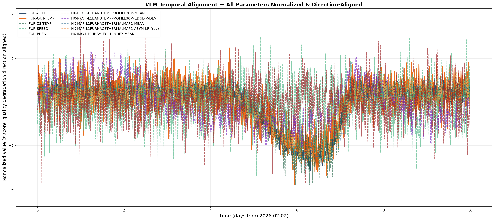
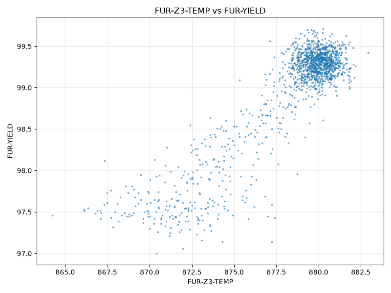
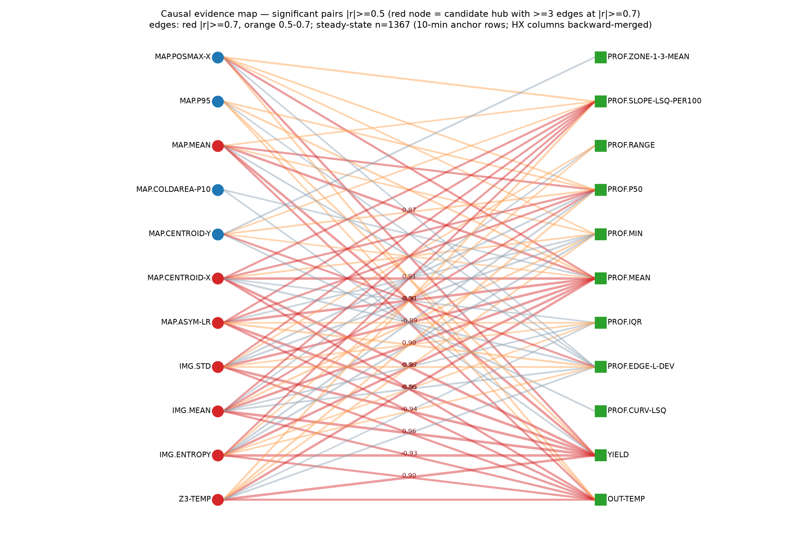
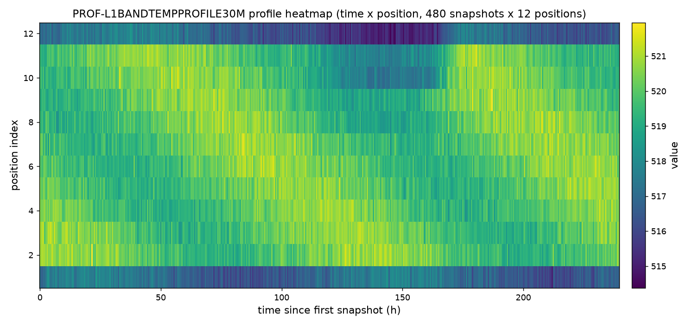
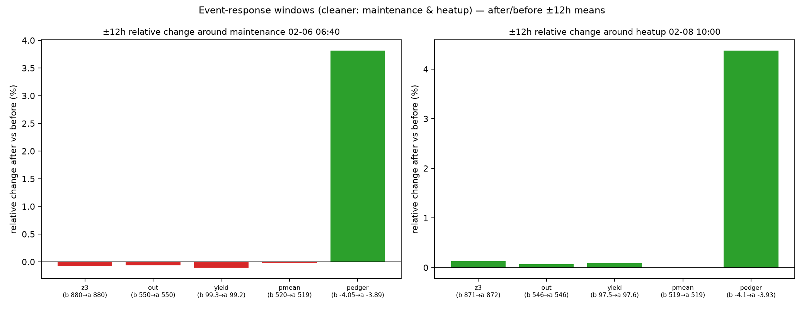

连续热处理线 10 天运行中，三区（均热段）炉温自 02-06 06:40 起水平下移 4.93 ℃（880.0079 → 875.0827 ℃）并伴随波动放大 4.85 倍（段内 std 0.7865 → 3.815）；同窗口出料温度下降 2.24 ℃、收得率下降 0.99 pt。异常具空间选择性：炉膛右/下侧先失热（带材右边缘偏差 −1.24 ℃、剖面斜率 −2.42 ℃/100位）。一区/二区炉温、线速度、炉压全程无水平偏移。02-08 10:00 更换三区后段加热管后，各通道回到基线（D−A：Z3 −0.50 ℃ / OUT −0.13 ℃ / YIELD −0.08 pt），构成器件级介入—响应闭环。
阅读指引：自上而下依次为 结论 → 异常位置（2D 工段 + 3D 场景）→ 诊断推理（现象量化 · 介入—响应时间线 · 交互图表）→ 证据链三层（统计相关性 / 物理因果 / 排除唯一性）→ 附录披露（Judge 4 条警告与审计备忘逐条对齐）。每张图配三行解读，专业术语紧跟白话翻译（如 std＝标准差，衡量温度波动的离散程度）。
这是一条连续热处理线（连续退火/保温热处理炉线），以三区炉温（一区 850 ℃ / 二区 865 ℃ / 三区均热段设定 880 ℃）+ 传输速度 + 炉内压力控制带材的出口温度与性能。10 天连续运行（2026-02-02 → 02-11，10 min 粒度 1440 行）中，异常集中在出料前段的第三区（均热段）后段。
数据构成：DCS 过程/质量锚定列（10 min）；异构通道——带材横向温度剖面 PROF（30 min × 12 位点）、炉膛温度场 MAP（2 h，5×4=20 格）、表面检查图像统计 IMG（1 h）；9 条操作备注（L2）；实验硬度 LAB-HRC（2 h，未并入主表）。单产品连续生产、无批次列 → 以操作事件锚定 regime 分段（A 前段 616 行 / B 维护窗 308 行 / C 升温过渡 66 行 / D 恢复段 450 行）替代产品分组。
时间锚（操作备注 L2）：02-05 02:10 三区波动偏大（先导）→ 02-06 06:40 “后段温度持续偏低，怀疑加热管老化，安排计划检修”→ 02-06 22:15 右边缘偏低＋硬度抽检下降 → 02-08 10:00 “更换三区后段加热管，恢复送电升温”→ 02-10 09:00 “温度与硬度均已恢复，问题闭环”。
2D 工段流程 S1–S6 与设备编号取自 01_ontology/ontology.json（scene.stages / scene.equipment）；异常高亮落在真实设备 FUR-Z3（三区均热炉膛后段），与 H1 结论的空间指纹一致。
3D 场景按 01_ontology/ontology.json 的工段顺序 S1→S6 重建（本 run 无 3d_model_data.json → 按设备角色做几何简化：炉区=箱体、辊道=圆柱、检测=立柱传感器、流向=连续管）；几何允许简化，工艺顺序与异常落点不得出错。
方法路径：清洗与稳态过滤（1367/1440 稳态行）→ 事件锚定分段（A/B/C/D）→ 400 对目标×预测子相关筛查（stats/run.py 链）→ 反伪相关四件套（去趋势 detrending、Simpson 检查不适用、LOO 留一、Spearman 背离与变点检测）+ 分段内相关与快照级去重 → 滞补 CCF（以步为单位）→ 物理量级校核（热平衡、停留时间、Arrhenius、Wien）→ VLM 图件目视 → 7 假说竞争与 6 对可分辨性检验。
白话翻译：先用统计找出“谁和谁一起变”，再用物理检查“这条因果链在量级和时间尺度上说不说得通”，最后用排除法检查“还有没有别的解释能同时满足全部证据”。三者交叉一致的结论才被保留。
| 指标 | A 段（劣化前） | B 段（劣化窗） | D 段（恢复后） | ΔB−A |
|---|---|---|---|---|
| Z3 炉温 均值（℃） | 880.0079 | 875.0827 | 879.5107 | −4.9252 |
| Z3 炉温 段内 std（℃） 标准差＝波动的离散程度 | 0.7865 | 3.815 | 1.7033 | ×4.851 |
| OUT 出料温度 均值（℃） | 549.9952 | 547.7534 | 549.8661 | −2.2418 |
| YIELD 收得率 均值（%） | 99.3009 | 98.3113 | 99.2187 | −0.9896 |
| PROF 剖面均值（℃） | 519.4936 | 519.0884 | 519.4779 | −0.4052 |
| EDGE-R-DEV 右边缘偏差（℃） | −2.869 | −4.1096 | −3.3136 | −1.2406 |
| SLOPE 剖面斜率（℃/100位） | +0.2323 | −2.1919 | +0.3902 | −2.4242 |
| MAP-MEAN / ASYM-LR 炉膛场 | 862.3882 / −3.5572 | 861.6722 / −1.4991 | 862.3138 / −3.4131 | −0.7160 / +2.0581 |
| IMG-MEAN 图像辐射均值 | 149.4762 | 142.0397 | 147.3273 | −4.975% |
来源：02_processed/validate_report.json + expert_findings.json + production_regime_filter.json 段定义；数值经 optimizer.md §2.1 由 cleaned_data.csv（1440×48）独立重算一致。ASYM-LR＝左半−右半（ontology 定义，INFERRED）：向 0 塌陷＝右侧（原较热侧）失热。SLOPE 基线符号按审计 E1 更正为 +0.2323。
| 段 | Z3 均值（℃） | Z3 段内 std（℃） |
|---|---|---|
| A 劣化前 | 880.0079 | 0.7865 |
| B 劣化窗 | 875.0827 | 3.815 |
| D 恢复后 | 879.5107 | 1.7033 |
| 通道 | ΔB−A | ΔD−A |
|---|---|---|
| Z3-TEMP（℃） | −4.9252 | −0.4972 |
| OUT-TEMP（℃） | −2.2418 | −0.1291 |
| YIELD（pt） | −0.9896 | −0.0822 |
口径说明：全文滞后量仅以“步”表述（如 Z3→OUT 最优 lag +4 步），不做步→时间换算（CP-7L 纪律，附录 B.5）；带日期的时间仅来自操作备注与时间索引本身。
统计层回答：三区炉温与质量、出料温度、横向剖面之间，是不是真的“同窗、同向、同步恢复”？答案是：相关系数高且去趋势后不衰减，但需要注意 Pearson 高值主要由“段间水平偏移”贡献（Spearman 明显更低），因此证据强度定为 strong-with-caveat（水平偏移主导）。
| 段 | Z3 ↔ YIELD 相关 r |
|---|---|
| A 段（劣化前） | 0.0267 |
| B 段（劣化窗） | 0.8549 |
| D 段（恢复后） | 0.7393 |
| 参数对 | 原始 r | 去趋势 r |
|---|---|---|
| Z3 → YIELD | 0.8987 | 0.8960 |
| Z3 → OUT-TEMP | 0.7419 | 0.7372 |

fig_vlm_temporal_overlay（CRITICAL，VLM 直读）：10 条 z 归一化曲线（z 归一化＝把不同量纲的曲线拉到同一尺度比较形状）存在一个多通道同步的下凹包络——约 day 5.2 起整体下移，day 6.0–6.6 最深（−2 ~ −4σ），day 7.0–7.5 陡峭回升；形态为“宽底谷”（约 2 天宽）而非尖脉冲，谷内各通道零错位（同步）。渲染偏差（上游图件层 WARNING）：图中无设计要求的红色事件标注线 → 事件先后为刻度换算推断（±0.3–0.5 天）；点划反向通道（ASYM-LR）的孤立尖峰（day≈0.8、8.5–9.5）不作为同步证据。

fig2_key_scatter（MEDIUM）：fast 模式 VLM 4 图预算未直读该图（INFO 级披露），其统计内容见 image_captions.json——Z3↔YIELD r=0.899（窄带形态）；速度–温度 r=−0.013（无信号，H4 排除的关键手臂）。

fig6_causal_evidence_map（HIGH，VLM 直读）：红 hub 节点＝MAP.MEAN / MAP.CENTROID-X / MAP.ASYM-LR / IMG.STD / IMG.MEAN / IMG.ENTROPY / Z3-TEMP；最密集红边束（|r|≥0.7）汇聚到 PROF.EDGE-L-DEV / YIELD / OUT-TEMP；存在一条 −0.91 负权边（结构非单一同向共模）；Z3-TEMP 有直达 YIELD 与 OUT-TEMP 的长边（r=0.899 / 0.742）。关键限定：MAP/IMG 为共线 hub（相机–热辐射同源或共同上游），不得作为独立证据重复计数；独立复现按带材剖面（PROF）与 DCS 出料测温（OUT）两类不同测量技术计，MAP/IMG 降权。
| 参数对 | Pearson r | Spearman ρ | 最佳滞后（步） | 备注 |
|---|---|---|---|---|
| FUR-Z3-TEMP → FUR-YIELD | 0.8987（detrended 0.8960） | 0.5098 | −1 步（≈同步） | 水平偏移主导（31 对之一）；窗内 B 0.8549 / D 0.7393 / A 0.0267 |
| FUR-Z3-TEMP → FUR-OUT-TEMP | 0.7419（滞补 0.7448） | — | +4 步 | 与均热段停留时间 t_res=L/v 量级一致；detrended 0.7372 |
| FUR-Z3-TEMP → PROF-MEAN | 0.8584（快照级 0.8579, n=480） | 0.5730 | 0 | 同被测量跨通道一致性（physical/strong） |
| MAP-ASYM-LR ↔ PROF-EDGE-L-DEV | 0.6807（滞补 0.6869） | 0.5881 | −6 步 | 源快照粒度量化带内；B 段窗内 0.8814 |
| IMG-MEAN → FUR-YIELD | 0.956（快照级 0.9524, n=240） | 0.5439 | — | IMG 未标定 → 按混杂权重 moderate，不计独立证据 |
| FUR-SPEED → FUR-OUT-TEMP | −0.0125（p=0.645） | — | 无显著滞后 | 方向一致但功效不足（速度极差 ±1.4%）→ 证据缺口（非物理反驳） |
来源：02_processed/validate_report.json、expert_findings.json（快照级去重复核 n=480/240）。术语翻译：Pearson r＝线性同步度（1 为完全同向）；Spearman ρ＝只看排名的同步度（对极端值/平台更稳健）；滞后（步）＝谁先动，正号表示左列先动。
物理层回答：统计上的“一起变”，在传热与控制方程上能否逐环闭合？7 环链条逐环给出量化，全部 ALL_LINKS_VALIDATED；其中两条无数据支撑的箭头被显式剔除并登记（不静默删除）：FUR-SPEED→FUR-OUT-TEMP（CORRELATION_ABSENT，功效不足）与 FUR-OUT-TEMP→LAB-HRC（DATA_LINK_MISSING，硬度未并入主表）。
7 环量化与证据状态见 04_diagnostics/diagnosis.json physical_logic_chain（report.md §6.2 表）；每环均回到控制方程检查量级、时间尺度与空间指纹。
| 校核项 | 观测 | 预测/参考 | 判决 |
|---|---|---|---|
| 传热增益 ΔOUT/ΔZ3 | 0.4552 | 0.4–0.5（有限时间常数一阶过程预期） | 量级一致 MATCH |
| 炉膛场降幅占三区降幅 | 14.5%（≈2.9/20 格） | 整场均匀掉温应≈100% | 排除全局型（H3） |
| Arrhenius 速率比 k_B/k_A | 0.9648（−3.52%） | 实测收得率相对损失 1.00%；观测/预测=0.2835 | PLAUSIBLE（不过度归因） |
| 辐射幅值 vs Wien 一阶预测 | −4.98% | −5.29%（比值 1.06） | 无需增益漂移（H5 支撑） |
来源：02_processed/physics_check.json + 派生量级校核（report.md §6.2 / optimizer.md §3）。限定：线性换热/线性吸热近似、Ea=80 kJ/mol 为中立先验未标定、Wien 的 λ 取值为假设（M2）——因此仅作量级校核（已计置信度 −5）。

fig_hetero_profile_heatmap（CRITICAL，VLM 直读）：12 位点 × 480 快照热图中，第 1/12 行（两侧边缘）全程最暗、第 4–5 与 10–11 行全程最亮——边缘偏冷是全时段结构性基线，不是劣化特征。中段（目视 x≈100–165 h）出现横跨位点 2–11 的整体变暗，窗内下侧半区（行 2–6）比上侧更暗；约 x≈100–112 h 有贯穿全行的窄暗竖带（台阶式起点，目视 ≈02-06 04:00–05:00，与检修锚 02-06 06:40 对齐——时间定位为刻度换算推断）；其后至 x≈165 h 渐进恢复。渲染偏差（WARNING）：实际为单幅热图+色标，无 manifest 所述 z 叠加子图与事件竖线。
空间一致性检查：异常落点（三区后段、炉膛右/下侧）与机制（局部热源损失 → 横向热流不对称）方向一致；配准探针 SHIFT-EST 全表恒 0 → 形状变化不是横向配准伪影；ASYM-LR（左半−右半）向 0 塌陷同时右边缘更冷、左边缘转暖（−2.9891→−2.3384）——左右收敛恰为“右侧（原较热侧）失热”的空间指纹。
排除层回答：还有没有别的解释能同时满足全部证据？7 个竞争假说（H1–H7）逐一经“时间先导 + 统计显著 + 物理机理 + 无矛盾”四条件与可分辨性矩阵检验：6 对比较全部 DISCRIMINABLE（可分辨），无 INDISTINGUISHABLE 对（不触发 COMPETING_SET ≤65 天花板）；排除置信度 90–92，无 [WEAK_EXCLUSION]；单一假说存活 → DETERMINED。判别信号的本质是两条：介入—响应（换管后多通道回归基线）与空间选择性（右侧/后段更强）——前者否定仪表/相机/事件型解释，后者否定全局型解释。

fig_event_response（HIGH，VLM 直读）：维护（02-06 06:40）±12h——z3/out/yield/pmean 柱幅度均 <0.15%（红条近零不可见），仅 pedger 一根大绿条 ≈+3.8%（b −4.05→a −3.89）；升温（02-08 10:00）±12h——同类通道为小正绿条 <0.15%，pedger ≈+4.3%。口径警告（WARNING）：pedger（边缘偏差）的相对变化按其幅值口径计算，与其余柱的百分比口径不同且主导 y 轴尺度——跨指标柱高不可直接比较。
| ID | 假说 | 判定 | 排除类型 | 排除置信度 | 关键判别信号 |
|---|---|---|---|---|---|
| H1 | 三区后段加热能力损失（加热管老化） | 存活 DETERMINED | — | 76（置信度） | 介入—响应闭环 + 空间指纹 + 四条件合取 |
| H2 | 热电偶/仪表读数漂移 | 排除 | COMBINED | 90 | 独立通道同步 + 空间选择性 + 恢复跟随器件更换 |
| H3 | 全局热负荷/保温整体劣化 | 排除 | PHYSICAL | 92 | 上游 Δ<0.04 ℃；场降幅仅 14.5%（应≈100%） |
| H4 | 速度/停留时间失配 | 排除 | STATISTICAL | 90 | r=−0.0125 (p=0.645)；量级仅占 11%；恢复边界速度不变 |
| H5 | CCD 相机/照明漂移 | 排除 | COMBINED | 90 | 测量侧不能致过程侧；−4.98% vs Wien −5.29%（比值 1.06） |
| H6 | 炉压→表面氧化→质量损失 | 排除 | COMBINED | 90 | 签名通道全表恒 0（死亡）；炉压 Δ−0.0072 且在正常范围 |
| H7 | 维护/升温事件瞬态 | 排除 | COMBINED | 90 | 事件幅度仅 10.7%–15.6%；瞬态 vs 2–3 天平台形态不符 |
来源：04_diagnostics/diagnosis.json（hypotheses.eliminated / discriminability_matrix）+ evidence.json；6 对比较 6/6 DISCRIMINABLE，无 [WEAK_EXCLUSION]，无 INDISTINGUISHABLE 对 → 不触发 COMPETING_SET 天花板。
| 因子 | 得分 | 满分 | 为什么是这个分（摘要） |
|---|---|---|---|
| 统计强度 | 19 | 25 | 主力对通过 detrend/LOO；扣分：31 对水平偏移主导（ρ 背离）、HX 伪重复（有效 n 降至快照级） |
| 物理合理性 | 20 | 25 | 形态/滞后/方向三项 MATCH + 量级 PLAUSIBLE；扣分：Ea 未标定（中立先验）、线性近似 |
| 时序证据 | 17 | 20 | 过程侧先导质量侧 ≈8 h；Z3→OUT +4 步与 t_res 量级一致；扣分：源粒度限制亚步级分辨 |
| 无混淆 | 11 | 20 | regime 混杂已由事件锚分段+稳态过滤处理；扣分：IMG 未标定、LAB-HRC 未并入、来料/环境未记录、备注稀疏 |
| 症状完整性 | 9 | 10 | 覆盖 Z3/OUT/YIELD/PROF/MAP/IMG 与恢复；未覆盖 D 段残余波动、硬度侧仅 L2、场空间分辨率不足 |
| 合计 | 76 | 100 | MEDIUM；调整记录：−6 水平偏移主导 / +5 介入—响应闭环 / +5 多通道独立复现 / −5 Ea 先验未标定 / −4 HX 伪重复 |
| # | 新证据 | 后果 |
|---|---|---|
| 1 | 三区热电偶校准记录显示同期存在 ≥2 ℃ 校准漂移 | 降级为仪表型/复合机制 |
| 2 | LAB-HRC 并入主表后硬度与均热温度无同向关系（|r|<0.2 且方向相反） | 均热温度→性能链断裂 |
| 3 | 取得该时段三区后段元件功率/电流记录且显示功率恒定 | 器件级机制被否证 |
| 4 | 发现同期来料成分/厚度变更记录且可解释 −4.93 ℃ 与右侧空间指纹 | 让位于来料型解释 |
| 5 | 发现未记录的额外操作事件恰在偏移边界且具平台持续时间 | H7 复活评估 |
| 优先级 | 动作 | 验证判据 | 预期效果 |
|---|---|---|---|
| P0 | 调取三区热电偶 2026-02 校准记录，比对 02-06–02-08 窗 | 无 ≥2 ℃ 同期偏移 → H2 保持排除；如有 → 按“过程+读数”复合机制重评 | 关闭最大残余不确定性（±10 分口径） |
| P0 | 为三区后段加热元件加装功率/电流采集 | 换管前后功率阶跃恢复 → 器件级升为 PROVEN；功率恒定 → H1 器件机制被否证 | 器件级归因闭环 |
| P1 | LAB-HRC（2h 硬度）按时间锚并入锚定主表，重算与 Z3/OUT 相关 | |r|≥0.2 且同向 → 硬度链闭合（+3~5 分）；|r|<0.2 反向 → 链断裂 | 补齐质量终点（当前仅 L2 佐证） |
| P1 | 相机暗帧/照明基准标定；冷却段参数与来料成分/厚度登记；FUR-SPEED/PRES 单位声明 | 标定后 IMG-MEAN 仍随带温 → H5 幅值混杂关闭；来料记录能解释 −4.93 ℃+右侧指纹 → 让位来料解释 | 关闭混杂与单位歧义 |
| P2 | 监控 Z3 段内 std（阈值 1.6 ℃≈2× 基线）、EDGE-R-DEV、ASYM-LR 纳入日常 SPC | 收敛至基线带 → 修复完全；持续偏高 → 残余仪表/回路因素复查（H2 复活条件之一） | 确认修复完全性（M3 跟踪项） |
局限与不确定性（诚实清单）：① 数据盲区——LAB-HRC 未并入锚定主表、无三区后段元件功率/电流/电阻记录、无热电偶校准记录、无冷却段参数、无相机暗帧/照明基准、无来料成分/厚度与环境温度；② 方法/模型——线性换热/线性吸热近似仅用于量级校核，Ea=80 kJ/mol 为中立先验（未标定），Pearson 对水平偏移敏感（已用 Spearman/分段/快照级三重交叉）；③ 不可约——10 min 采样与 HX 源粒度（30min/1h/2h）量化、MAP 5×4@2h 空间分辨率、收得率统计抖动与硬度 2h 稀疏性、VLM 目视无法分辨 +4 步级先导；④ 未控混杂——操作备注稀疏（9 条/10 天）、D 段残余波动（std 1.7033 vs 0.7865）；⑤ 契约缺项——FUR-SPEED/PRES 单位未声明（仅相对量）。
结论范围：限定于 2026-02-02 → 02-11 的 10 天连续运行异常窗，不外推为长期趋势；器件级归因以操作记录与介入响应为准，非直接电学测量（STRONG_EVIDENCE，非 PROVEN）。
本页全部数字与结论以 canonical 工件为准；下面是 Judge 质量门的 4 条非阻断警告（B.1–B.4）、CP-7L 口径纪律（B.5）与最终物理审计的 1 项笔误 + 4 条备忘（E1、M1–M4）——均已在报告侧如实披露，不影响结论方向与置信度数值。
| ID | 来源 | 内容与处置 |
|---|---|---|
| B.1 | Judge warnings[0] | OUT-TEMP 下移窗端点标签不自洽（上游记 02-08 23:40，索引口径应为 ≈02-08 11:30）→ 本页统一采用索引口径：02-07 00:20 → ≈02-08 11:30（35.33 h，窗内 OUT 均值 546.3626 ℃ 可复算，Judge 已独立复核）；标签不一致属上游簿记问题，不影响结论 |
| B.2 | Judge warnings[1] | reasoning_chain 演化表算术不自洽（H1 记 55 ≠ 76；H4 记 16 ≠ 26）→ 权威模型为 confidence.json 五因子逐项加总（H1=19+20+17+11+9=76；H4=4+8+6+6+2=26），本页以五因子口径为准 |
| B.3 | Judge warnings[2] | 上游双驱动契约状态：anomaly_report 修复后含 10 条由 causal_evidence_map 投影的链接（均为 level-shift dominated 的相关候选，非因果判定）；summary.integrated_links=0 与 10 条链接内部不一致（上游簿记待归一化） |
| B.4 | Judge warnings[3] | 图件渲染偏差（上游图件层）：overlay 无红色事件标注线、heatmap 无 z 叠加子图、event_response 的 pedger 与其余柱口径不同 → 本页凡引用目视事件先后，一律保留“目视刻度换算推断 ±0.3–0.5 天”限定语，精确先后以 stats/CCF 为准 |
| B.5 | CP-7L 纪律 | time_alignment.json（1 步=600 s）与 time_lag_analysis.json（step_interval_seconds=null，unit_conversion_available=false）口径不一致 → 全文只述步数（如 lag +4 步），不做步→时间换算；primary_finding 引文中经换算的时长表述按纪律移除（差异已披露） |
| E1 | optimizer.md §5.1 | report.md §4.2 SLOPE A 段基线符号笔误（−0.2323 应为 +0.2323）；canonical level_shift_deltas.pslope.A_pre=+0.2323 与 §8.4 表均为正 → 本页采用 +0.2323；不影响任何结论、阈值与行动（劣化转向与恢复方向均由 Δ 承担） |
| M1 | optimizer.md §5.1 | run_summary.report_stats.file_size_bytes=46116 为 CP-7L 修复前快照（现 report.md 46862 B）→ 终局 finalize 重新生成即可，无需 Step 8 前动作 |
| M2 | optimizer.md §5.1 | Wien 检查的 λ 取值在 confidence.json（≈0.9 µm）与派生 −5.29%（隐含 ≈1.0 µm）间存在假设差异；结论对 λ∈[0.85,1.1] 稳健，无需重算；建议下次运行登记相机谱段 |
| M3 | optimizer.md §5.1 | D 段未完全收敛：EDGE-R-DEV ΔD−A=−0.4446 ℃、Z3 std 1.7033 vs 0.7865（×2.17）→ 纳入 SPC 监控确认计划（M3 跟踪项） |
| M4 | optimizer.md §5.1 | anomaly_report summary.integrated_links=0 与 10 条投影链接不一致（上游簿记待归一化）；不影响本报告结论 |
审计终审判定：ENDORSED（物理真相成立，全部披露缺口有界；0 阻断项、0 物理矛盾、0 证据等级错配；唯一修订项 E1）。数据来源：05_review/judge_feedback.json、optimizer.md §4–§5。